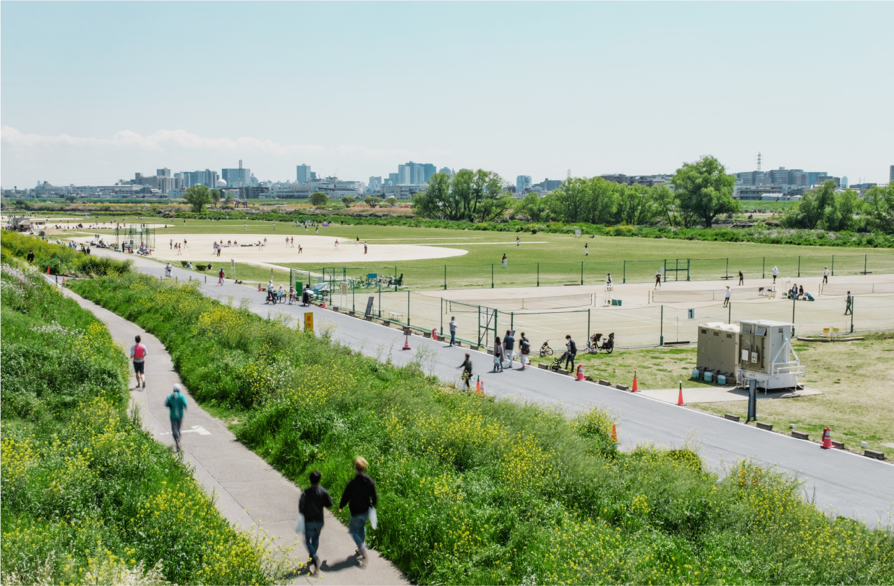
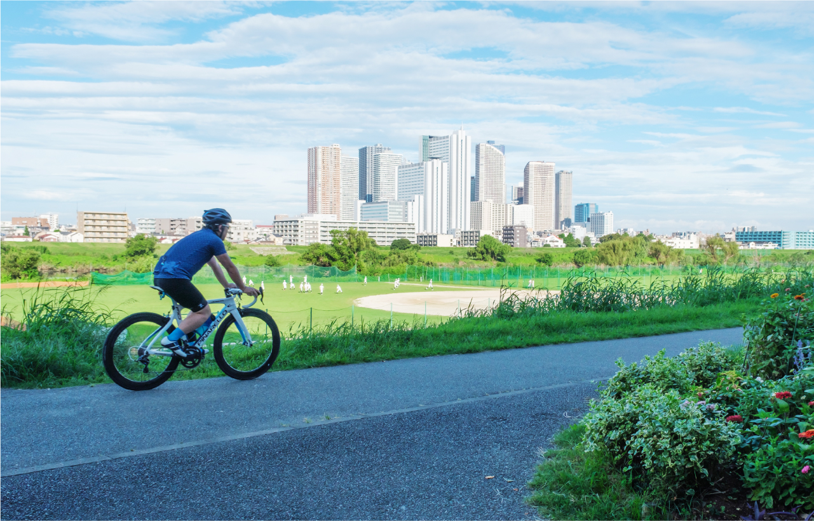
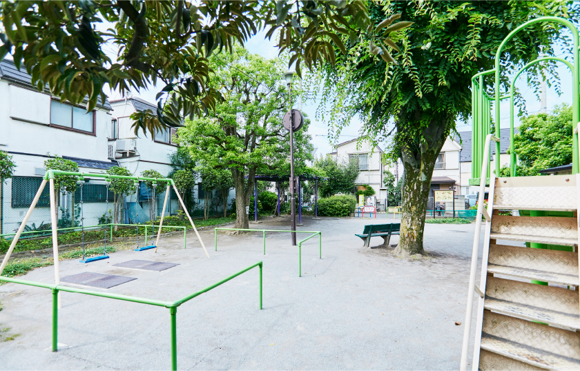

多摩川ガス橋緑地（約380m／徒歩5分）
あふれる自然を感じながら、毎日を心地よく暮らす。
多摩川ガス橋緑地（A:徒歩5分／B:徒歩6分）
スポーツや散策を楽しむ人で賑わう、
緑豊かな多摩川河川敷。
「シティテラス下丸子」のすぐ傍に広がる多摩川河川敷の「多摩川ガス橋緑地」には、サイクリングロードや野球場、テニスコートなどが整備されています。天気のいい日には、散歩やジョギング、ピクニックを楽しむ地域の人々で賑わっています。
-
-

多摩川ガス橋緑地（A:徒歩5分／B:徒歩6分）
120本を超える桜並木がつくる春の風景。
花見の人気スポットでもある多摩川河川敷の「多摩川ガス橋緑地」は、毎年開花を心待ちにしていた人々で賑わいます。大田区が取り組んだ植樹事業によって植えられた桜の数は約120本。見頃の時期には春色に染まる多摩川沿いを楽しめます。

多摩川ガス橋緑地（A:徒歩5分／B:徒歩6分）
-
打ち上げ花火が彩る多摩川の夏。
昭和62年に、平和を祈る想いからスタートした「花火の祭典」。多摩川の河川敷から打ち上げられる約4,000発の花火は、大田区の一大イベントです。毎年の夏の思い出に夜空に咲く大輪の華を、家族みんなで観るしあわせが、この場所にあります。
出典：大田区ホームページ 大田区平和都市宣言記念事業「花火の祭典」（2023年6月現在）
※開催内容は変更・中止になる場合があります。 -
image photo
子どもたちがのびのびと遊べる、
さまざまな公園が徒歩5分圏内に6つ。
image photo


下丸子公園（A:徒歩3分／B:徒歩5分）
昭和62年に、平和を祈る想いからスタートした「花火の祭典」。多摩川の河川敷から打ち上げられる約4,000発の花火は、大田区の一大イベントです。毎年の夏の思い出に夜空に咲く大輪の華を、家族みんなで観るしあわせが、この場所にあります。
-

くすのき公園（A:徒歩3分／B:徒歩2分）
-

下丸子余情公園（A:徒歩3分／B:徒歩4分）
-

鵜の木二丁目児童公園
（A:徒歩4分／B:徒歩3分） -

あおぞら児童公園
（A:徒歩6分／B:徒歩5分） -

あけぼの児童公園
（A:徒歩5分／B:徒歩6分）
image photo
子どもの成長をしっかりサポートする
充実した保育・教育環境。
身近に数多くの幼稚園・保育園が点在する「シティテラス下丸子」。小学校・中学校も通いやすい距離にあり、良好な子育て環境が整っています。
幼稚園・保育園は徒歩10分圏内に13園
-
キッズラボ下丸子園
-

グローバルキッズ鵜の木園
-

嶺町幼稚園
広い施設でのびのびと学べる通学校
-
大田区立嶺町小学校（A:徒歩12分／B:徒歩11分）
-

大田区立矢口中学校（A:徒歩13分／B:徒歩14分）
TOPICS
住み続けたい街「大田区」は、子育てにも優しい街。
-
2021年に実施した「大田区政に関する世論調査」によると、「あなたは大田区に住み続けたいと思いますか?」の質問に対して、半数以上の人が「ずっと住み続けたい」と回答し、「当分は住み続けたい」と回答した人を合わせると8割以上となる結果に。区民の定住意向の高さから、大田区住まいの魅力が伝わってきます。
-

出典：大田区政に関する世論調査（2021年7月実施）
-
出典：東京都建設局ホームページ「東京都都市公園等区市町村別面積：人口比率表（2022年4月版）」
-
平成23年から緑地の保全や都市公園の整備を進めてきた大田区。その結果、東京23区内で都市公園数が最も多い区になりました。「シティテラス下丸子」のまわりにも多くの公園があり、子どもから大人まで公園でのひとときを楽しんでいます。
-
大田区は、私立保育園の開設支援を積極的に行った結果、2021年と2022年で待機児童ゼロを実現しました。さらに区立保育園の民営化による保育サービスの充実や、保育園園長をメンバーとしたプロジェクトチームの発足など、区全体で保育水準の向上にも取り組んでいます。
-
出典：大田区ホームページ 「保育所等利用待機児童の状況」（2022年4月1日現在）
凡例）A:エアーズコート（グランドエントランス）、B:ブリーズコート（ノースエントランス）
※掲載の距離表示については地図上の概測距離を、徒歩分数表示については80mを1分として算出し、端数を切り上げたものです。
※掲載の環境写真は2022年4月〜2023年7月に撮影。
※施設の内容等は将来変わる場合があります。
※掲載の情報は2023年7月現在のものです。